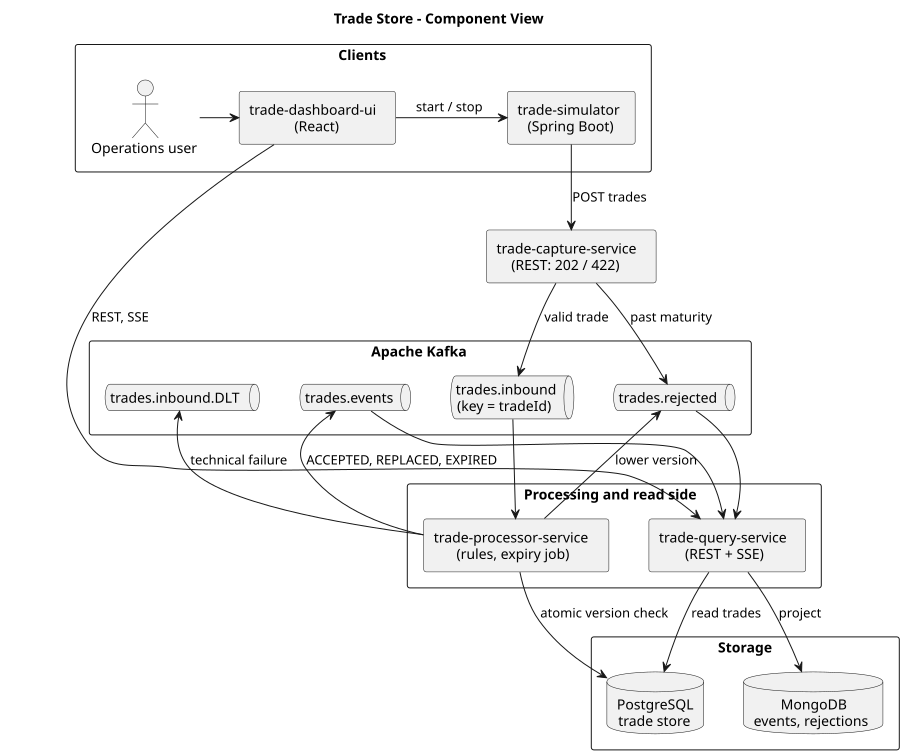
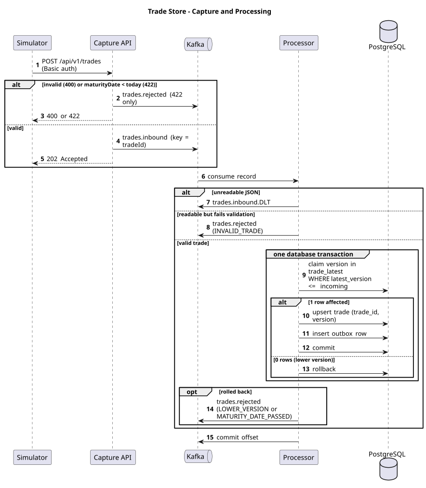
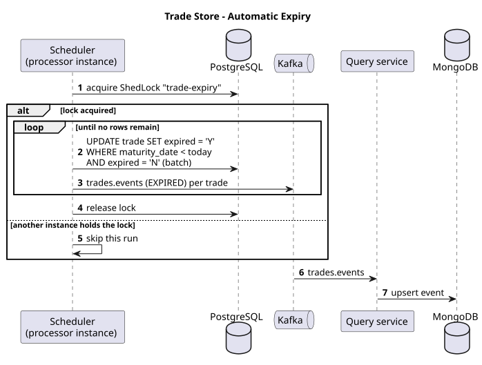
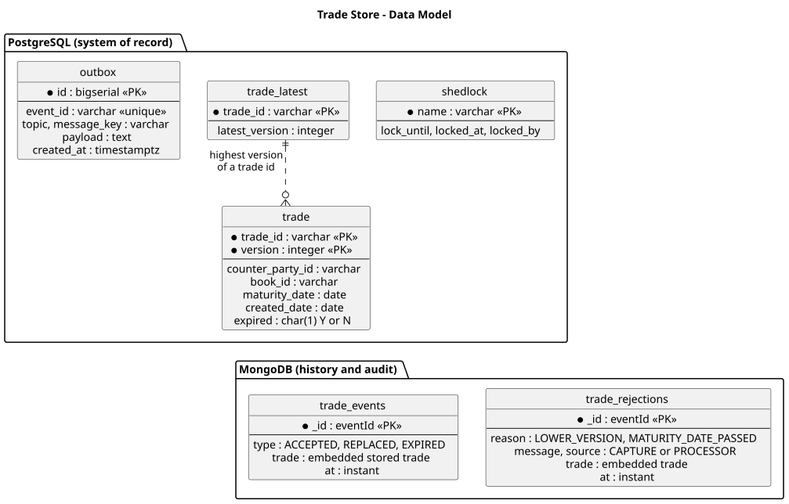
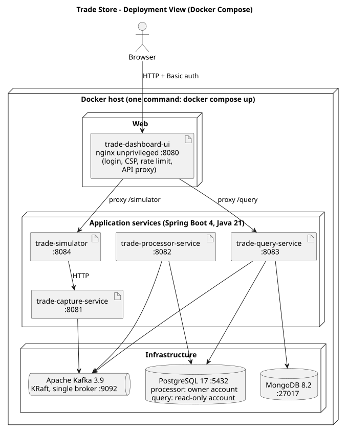
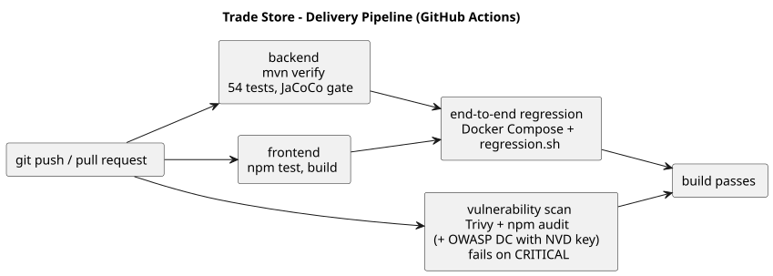

| Version | 1.0, 12 November 2026 |
| Status | Implemented through phase 8; phase 9 (load run and tuning) on hold |
| Source | github.com/vijaydixitffis/dws-trade-app |
| Stack | Java 21, Spring Boot 4.1, Apache Kafka, PostgreSQL, MongoDB, React |
| 1. Problem statement |
| 2. Scope, goals and decisions |
| 3. Solution overview and components |
| 4. Technology choices |
| 5. Runtime flows |
| 6. Design of the three rules |
| 7. Data design |
| 8. Deployment view |
| 9. Non-functional requirements and how the solution meets them |
| 10. Quality, testing and delivery pipeline |
| 11. Risks, limitations and next steps |
| 12. Traceability from requirements to design and tests |
| Appendix: interfaces and configuration |
The assignment asks for a Java application using Spring Boot and a streaming tool, with both a SQL and a NoSQL database. It must be built test-first with JUnit, delivered through a pipeline (GitHub Actions preferred) that runs regression tests and an open-source vulnerability scan, and the build must fail on critical or blocker vulnerabilities. PlantUML diagrams are requested where feasible.
The business problem is stated as follows.
Thousands of trades are being sent to a single store, through any method of transmission. The objective is a trade store that organises and stores each trade in a specific sequence.
Each trade carries: Trade Id, Version, Counter-Party Id, Book-Id, Maturity Date, Created Date and an Expired flag (Y or N). The store must enforce three rules.
| # | Rule from the assignment |
|---|---|
| 1 | A trade with a lower version than the stored one is rejected with an exception. A trade with the same version replaces the current record. |
| 2 | A trade whose maturity date is earlier than today is rejected. |
| 3 | When a trade's maturity date has passed, the store automatically marks it as expired. |
The sample table in the assignment shows several versions of the same trade stored side by side (Trade T2 appears at version 2 and version 1), which tells us that the store keeps history rather than only the latest version.
Authentication and authorisation, TLS, multi-broker Kafka and database replication in the supplied Compose file, Kubernetes manifests, and measured load-test figures (phase 9).
| Topic | Decision |
|---|---|
| Streaming tool | Apache Kafka, one container with no extra coordination service, so it can be demonstrated locally, in the pipeline and at a client site with Docker alone. |
| Databases | PostgreSQL as the system of record; MongoDB for the history of store changes and rejections. |
| Packaging | Separate Spring Boot services in one Maven multi-module repository, plus a React dashboard. |
| Rejections | Domain exception, a rejected-trades topic, stored in MongoDB with the reason, shown on the dashboard; the capture API also answers HTTP 422 at once when it can decide alone (past maturity). |
| Version history | Every version of a trade is kept, one row per (trade id, version). |
| "Today" | The date in the server's own time zone; an administrator may configure another zone. |
| Maturing today | Accepted. Only a date earlier than today is rejected (default, not objected to). |
| Created Date on replace | Set to the date the replacing trade was received (default, not objected to). |
| Sample dates in the assignment | The 2020 sample rows are ignored; all tests use dates relative to today. |
| UI style | Plain corporate palette of blue, grey and white. |
Trades enter through a stateless capture API and are placed on a Kafka topic keyed by trade id. A processor consumes the topic, applies the rules against PostgreSQL in a single transaction, and announces every outcome on Kafka. A separate query service turns those announcements into a MongoDB history and feeds the dashboard. The simulator and the dashboard sit at the top.

| Component | Responsibility | State |
|---|---|---|
| trade-simulator | Generates trades at a chosen rate and mix (new, higher, same and lower version, past maturity) and posts them to the capture API. A run can also fix the counter-party and book pools, the maturity window and the trade id prefix. Started and stopped through a REST API or the dashboard, which offers a quick run dialog and a detailed run dialog. | None |
| trade-capture-service | Receives single and batch trades, validates structure, applies the maturity rule (HTTP 422 on failure, with the rejection recorded), and publishes accepted trades to trades.inbound. Answers 202 only after Kafka acknowledges the record. | None |
| Kafka | Topics trades.inbound, trades.events, trades.rejected and trades.inbound.DLT. | Log |
| trade-processor-service | Consumes the inbound topic, enforces the version and maturity rules in one database transaction, publishes the outcome, retries technical failures and parks unreadable records. Runs the expiry job. | PostgreSQL |
| PostgreSQL | The trade store. | - |
| trade-query-service | Projects outcome topics into MongoDB, serves the trade list from PostgreSQL and the history from MongoDB, and pushes live updates to the dashboard over Server-Sent Events. | MongoDB |
| MongoDB | History of every store change and every rejection. | - |
| trade-dashboard-ui | Summary counters, the trade store in sequence, rejected trades with reasons, and simulator controls: a quick run dialog (bulk mix) and a detailed run dialog (mix sliders and trade variety). | None |
| Concern | Choice | Why |
|---|---|---|
| Language and framework | Java 21, Spring Boot 4.1.2 (Spring Framework 7, Tomcat 11) | Required by the assignment. Boot 4 was adopted because the 3.5 line carried critical Tomcat and Spring MVC vulnerabilities that failed the pipeline's own gate. |
| Streaming | Apache Kafka 3.9, single node, KRaft mode | Partitioning by key gives per-trade ordering; replayable log; runs from one container. |
| SQL database | PostgreSQL 17 | ACID transactions and an atomic conditional upsert (INSERT ... ON CONFLICT ... WHERE) that enforces the version rule safely under concurrency; row locks that skip locked rows for the expiry job. |
| NoSQL database | MongoDB 8.2 | Append-style history and audit documents of varying shape (events and rejections), keyed by event id so redelivery overwrites itself. |
| Schema management | Flyway | Versioned, repeatable database schema. |
| Scheduled-job lock | ShedLock on PostgreSQL | Only one processor instance runs the expiry job. |
| UI | React, Vite, TypeScript, plain CSS | Quick to build and run; no UI framework needed. |
| Tests | JUnit 5, AssertJ, Mockito, Testcontainers, Awaitility, JaCoCo; Vitest and Testing Library for the UI | Real Kafka, PostgreSQL and MongoDB in tests rather than mocks of them. |
| Delivery | GitHub Actions; Trivy, npm audit and OWASP Dependency-Check | Named in the assignment; fails on critical findings. |
| Packaging | Docker and Docker Compose | One command starts the whole system anywhere Docker runs. |
No separate application server is installed: each Spring Boot service embeds Tomcat.
The main flow covers all three outcomes for a trade: accepted or replaced, rejected for a past maturity date, and rejected for a lower version.

trades.rejected so it is stored and visible. A malformed trade is answered with 400. Otherwise the trade is published to trades.inbound keyed by trade id and the caller receives 202 once Kafka has acknowledged it.ACCEPTED event (new row) or REPLACED event (same version). If the rule is broken, the store raises LowerVersionTradeException or MaturityDatePassedException, the transaction rolls back, and a rejection with the reason is published to trades.rejected.A business rejection is a normal outcome and goes to trades.rejected. A technical failure (a message that cannot be read, or the database unavailable after retries) goes to trades.inbound.DLT. Keeping them apart lets operations tell bad trades from broken infrastructure.

The job runs shortly after midnight in the business zone and once at startup, so trades that matured while the service was down are caught. A database lock allows one run at a time across processor instances. It marks trades in batches of 500 and publishes one EXPIRED event per trade.
| Incoming version compared with the highest stored | Result |
|---|---|
| Higher, or first for that trade id | A new row is added; earlier versions are kept. |
| Equal | The existing row is replaced. |
| Lower | Rejected with LowerVersionTradeException; nothing is changed. |
The check is made by the database, not in application memory, so it is correct with any number of processor instances. A small table holds the highest version per trade. One statement claims the version and affects no row when a higher version is already recorded:
INSERT INTO trade_latest (trade_id, latest_version) VALUES (?, ?) ON CONFLICT (trade_id) DO UPDATE SET latest_version = EXCLUDED.latest_version WHERE trade_latest.latest_version <= EXCLUDED.latest_version; -- 0 rows affected: a higher version exists, so reject -- 1 row affected: upsert the trade row in the same transaction
The statement takes a row lock on that trade, so concurrent writers of the same trade queue up and each sees the other's result. Kafka's per-key ordering means this rarely matters in normal running; the guard keeps the rule correct if ordering is ever disturbed by a rebalance, a replay or a second producer.
A trade is rejected when its maturity date is earlier than today; a trade maturing today is accepted. The rule lives in one shared class used by the capture API, the processor and the expiry job, so all three agree on the boundary. "Today" is read from an injected clock, which defaults to the server's own date and time zone and can be set by an administrator with trade.business-zone (environment variable TRADE_BUSINESS_ZONE). Tests fix the clock, including a case where the date differs between two zones.
The expiry job runs this against rows that are not yet expired, in batches, while skipping any rows currently locked by trade processing:
UPDATE trade SET expired = 'Y' WHERE (trade_id, version) IN ( SELECT trade_id, version FROM trade WHERE expired = 'N' AND maturity_date < :today ORDER BY trade_id, version LIMIT :batch FOR UPDATE SKIP LOCKED)
A partial index on maturity date for unexpired rows keeps the search fast as the store grows.
"Stored in a specific sequence" is implemented as the order of the sample table: trade id ascending, then version descending. The primary key and the query API both use it.

| Store | Notes |
|---|---|
PostgreSQL trade | Primary key (trade id, version). The expired flag is Y or N, as in the assignment. Dates are SQL dates. |
PostgreSQL trade_latest | Highest version seen per trade id; the target of the atomic version guard. |
PostgreSQL shedlock | Lock rows for the expiry job. |
MongoDB trade_events | One document per store change (accepted, replaced, expired). The document id is the event id. |
MongoDB trade_rejections | One document per rejection with reason, message, source (capture or processor) and the rejected trade. |
Event ids for processed trades are built from the inbound Kafka position (topic, partition, offset). Redelivering the same record therefore overwrites the same MongoDB document instead of creating a duplicate. The schema is created by a Flyway migration.
PostgreSQL holds what must be correct: the current state of the store, changed under transactions. MongoDB holds what is read, counted and audited: a history that is easy to append to and to show on a dashboard without touching the store's tables.

One command, docker compose -f deploy/docker-compose.yml up --build, builds and starts all eight containers with health checks and start-up ordering. Only Docker is required. The services read their settings from environment variables, so the same images move between a laptop, the pipeline and a client site.
| Setting | Purpose |
|---|---|
TRADE_BUSINESS_ZONE | Time zone that defines "today"; empty means the server's own zone. |
SPRING_KAFKA_BOOTSTRAP_SERVERS | Kafka address. |
SPRING_DATASOURCE_URL | PostgreSQL address. |
SPRING_MONGODB_URI | MongoDB address. |
trade.inbound-partitions, trade.processor.concurrency | Topic partitions (6) and consumer threads per processor instance (3). |
trade.expiry.cron, trade.expiry.batch-size | Expiry schedule (00:01 in the business zone) and batch size (500). |
trade.retry.* | Retry interval (1 s) and attempts (3) before a record is parked. |
For production the same services run on any container platform. The Compose file's single Kafka broker and single database instances would be replaced by a three-broker cluster and a highly available PostgreSQL and MongoDB (section 9).
The assignment names volume ("thousands of trades"), ordering, no loss and automatic behaviour. The table below turns those into explicit requirements and states how each is met. The last column is candid: Met means built and tested; Partly or Not yet marks work that remains.
| Requirement | How the solution addresses it | Status |
|---|---|---|
| Throughput | Capture is stateless, runs on Java 21 virtual threads, offers a batch endpoint (up to 1,000 trades per call) and publishes through a batching, compressed producer (linger.ms=5, lz4). The inbound topic has 6 partitions with a consumer thread per partition (3 threads per instance by default). Each trade costs two short database statements in one transaction. The expiry job is batched and skips locked rows so it does not stall processing. | Design supports it; figures not yet measured (phase 9) |
| Scalability | Capture and query are stateless and scale by adding instances behind a load balancer. Processing scales by adding instances up to the partition count; more partitions raise that ceiling. Kafka absorbs bursts so producers and the processor run at different speeds. Consumer lag is the signal to scale. | Met by design |
| Ordering | Records are keyed by trade id, so all versions of a trade share a partition and are handled in order by one thread. | Met |
| Data consistency under concurrency | The version rule is a single atomic conditional statement with a row lock, so correctness does not depend on arrival order or on how many processors run. A test sends 40 shuffled versions of one trade from 8 threads and checks that the highest version always wins and the recorded highest equals the stored highest. | Met |
| No loss of accepted trades | The producer uses acks=all and idempotence. The capture API answers 202 only after Kafka acknowledges the record, and answers 503 if it cannot. The processor commits its offset only after the database commit and the outcome publish. | Met (single broker in Compose, see Availability) |
| Delivery guarantee and idempotency | Delivery is at-least-once. Reprocessing is harmless: the same version replaces itself, and MongoDB documents are keyed by Kafka position. After a crash between commit and publish, the trade is reprocessed and the event is published then, with type REPLACED rather than ACCEPTED. | Met, with that documented wrinkle |
| Fault handling | Technical failures are retried (3 times, 1 s apart), then the record is parked on trades.inbound.DLT so the partition keeps moving. Unreadable or incomplete records are parked at once. Business rejections never use the dead-letter topic. | Met |
| Availability | Capture, processor and query are stateless and restart without losing data; Kafka buffers trades while the processor is down, and capture keeps accepting. Containers restart on failure and have health checks. The supplied Compose file runs a single broker and single databases, so it is not highly available. | Partly: production needs 3 brokers (replication factor 3, min in-sync replicas 2) and replicated databases |
| Durability | Trades are committed to PostgreSQL before the offset moves; inbound records stay in Kafka until retention removes them, allowing replay. | Met (replication is a deployment choice) |
| Auditability | Every store change and every rejection, with its reason and source, is kept in MongoDB and shown on the dashboard; Kafka topics allow replay. | Met |
| Correctness of time | One injected clock supplies "today" to capture, processor, expiry and simulator; the zone is the server's, or the administrator's override. The shared maturity rule defines the boundary once. A test shows a Tokyo clock moves the date a day ahead of UTC. | Met |
| Configurability | Time zone, partitions, concurrency, retry, expiry schedule, batch size and allowed browser origins are settings, not code. | Met |
| Observability | Spring Actuator health, info and metrics on every service. The processor counts outcomes (trades.processed by outcome: accepted, replaced, lower version, maturity passed). Rejections are logged with the reason. The dashboard shows live counters and recent rejections. | Partly: no distributed tracing or correlation id yet, and no metrics exporter configured |
| Security | Inputs are validated (required fields, version of at least 1, batch size limit). Containers run as a non-root user. Browser access is limited to an allow-list of origins. Dependencies are scanned on every build and critical findings fail it. | Not yet: no authentication, authorisation or TLS, and the Compose file uses default database credentials. These must be added before any non-demo use. |
| Maintainability and testability | Small modules with one job each; the rules live in a shared module with no framework dependency; every rule was written test-first. 63 backend tests, 11 UI tests and a 17-check end-to-end script. Line coverage above 90 % in every module, with a build-failing gate at 80 %. | Met |
| Portability and ease of setup | Docker is the only requirement to run the system; the same Kafka and database images are used in tests, the pipeline and the demo. The code imports into Eclipse as ordinary Maven projects. | Met |
| Supply-chain safety | Trivy and npm audit run on every build; any critical finding (CVSS 9.0 or above) fails it. OWASP Dependency-Check runs too when an NVD API key is configured. The gate has already proved useful: it forced the move to Spring Boot 4. | Met (OWASP run pending the key) |
| Data growth | Kafka retention bounds the log. The partial index keeps expiry cheap. MongoDB history grows without a limit today. | Partly: add a retention (time-to-live) policy for history |
| Usability | The dashboard shows the store in the assignment's column order and date format, live counters, rejection reasons, and simulator controls, in a plain corporate style. | Met |
For each backend phase the tests were written and committed first (they failed), then the implementation was written until they passed; the commit history shows test: commits before the matching feat: commits. The dashboard is the exception: its tests and components were written together.
| Level | What it covers | Count |
|---|---|---|
| Rule unit tests | Version and maturity boundaries, exceptions, business clock | 8 |
| Store tests on real PostgreSQL | Lower, same and higher version, maturity boundary, atomic rollback, 8-thread concurrency | 8 |
| Processor and expiry | One outcome per trade, zone-dependent date, expiry boundary, batches, re-run safety | 9 |
| Kafka integration | Accept, replace, reject in arrival order; past maturity; unreadable and incomplete records parked while good ones continue; capture API publishing with the right key | 4 |
| HTTP contracts | 202, 422, 400, 503, batch; simulator run control and validation of its variation inputs | 15 |
| Query side | Store ordering and paging, MongoDB projection and de-duplication, summary, live feed, CORS | 11 |
| Simulator generator | Scenarios are true to the versions already sent; mix matches the request; chosen counter-parties, books, maturity window and id prefix are honoured | 8 |
| Dashboard | Table, date format, summary, rejections, filter, quick and detailed run dialogs (open, cancel, validation, request contents) | 11 |
| End-to-end regression | Whole system on Docker Compose, using dates relative to today | 17 checks |

On every push and pull request the backend and dashboard jobs build and test, the vulnerability job scans in parallel, and the end-to-end regression runs once the build jobs pass. The latest run on the main branch has all four jobs green.
The same checks run without GitHub: mvn verify, docker compose up --build -d followed by deploy/regression.sh, and mvn -Psecurity-scan verify for OWASP Dependency-Check.
| Item | Detail and proposed action |
|---|---|
| Throughput not yet measured | Phase 9 will run the simulator at increasing rates and record trades per second, consumer lag and latency, then tune partitions, threads and batching. On hold at the sponsor's request. |
| No authentication or TLS | Add OAuth2 or API-key access on the capture and query APIs, TLS on all links, and secrets from a vault instead of defaults. |
| Single broker and databases in Compose | Production deployment needs a Kafka cluster (replication factor 3, min in-sync replicas 2) and replicated PostgreSQL and MongoDB. |
| Commit-then-publish window in the processor | A crash between the database commit and the outcome publish makes the trade reprocessed, so its event is published as REPLACED. A transactional outbox would remove the wrinkle if exact event types matter. |
| Fixed partition count | Six partitions cap processor parallelism at six threads per consumer group; increasing the count later is possible but needs care for keyed ordering. |
| Live feed with several query instances | An event reaches only the browsers connected to the instance that consumed it. The dashboard also polls every three seconds, so it stays correct. |
| Observability gaps | Add correlation ids from HTTP header through Kafka header to logs, and a Prometheus exporter with dashboards and alerts on consumer lag and dead-letter volume. |
| History retention | Add a time-to-live on MongoDB history. |
| OWASP Dependency-Check | Not yet run: it needs an NVD API key as a repository secret. Trivy covers the gate meanwhile. |
| Class diagrams | Planned with phase 9. |
| Requirement | Design element | Verified by |
|---|---|---|
| Spring Boot application | Five Spring Boot modules | Build and all tests |
| Streaming tool | Kafka topics between capture, processor and query | Kafka integration tests; regression script |
| SQL and NoSQL databases | PostgreSQL trade store; MongoDB history | Store, projection and query tests |
| Rule 1: lower version rejected, same replaces | Atomic guard in the trade store; exceptions | Store tests, concurrency test, Kafka integration, regression |
| Rule 2: past maturity rejected | Shared maturity rule in capture and processor | Rule tests, HTTP 422 test, Kafka integration, regression |
| Rule 3: matured trades expired | Scheduled expiry job with lock | Expiry tests |
| Thousands of trades, any transmission | Partitioned Kafka, batch API, stateless capture, validation in the processor | Simulator 500-trade regression; load figures pending |
| Stored in a specific sequence | Trade id ascending, version descending | Query repository test, dashboard test |
| JUnit, test-first | Tests committed before implementation | Commit history; 63 backend tests |
| Pipeline with regression and vulnerability scan; fail on critical | GitHub Actions workflow | Pipeline runs; the scan failed the build on real findings before the Boot 4 move |
| PlantUML diagrams | Component, sequence, data model, deployment and pipeline diagrams | Sources and rendered SVGs in docs/diagrams |
| Service (port) | Interface |
|---|---|
| Capture (8081) | POST /api/v1/trades returns 202, 422, 400 or 503. POST /api/v1/trades/batch accepts up to 1,000 trades and returns a result per trade. |
| Processor (8082) | Kafka consumer of trades.inbound; Actuator health, info, metrics. |
| Query (8083) | GET /api/v1/trades (paged, filter by trade id prefix), /events, /rejections, /summary, and /stream (Server-Sent Events). |
| Simulator (8084) | POST /api/v1/simulations starts a run (volume, scenario mix, and optional counter-parties, books, maturity window and id prefix); GET and DELETE /api/v1/simulations/current report and stop it. |
| Dashboard (8080) | Web page served by nginx. |
Repository layout: trade-common (model, rules, schema), trade-capture-service, trade-processor-service, trade-query-service, trade-simulator, trade-dashboard-ui, deploy (Compose, Dockerfile, regression script) and docs.